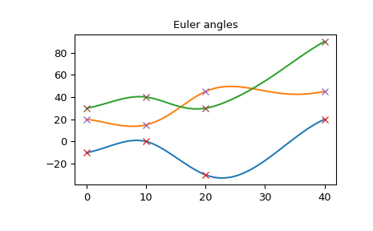
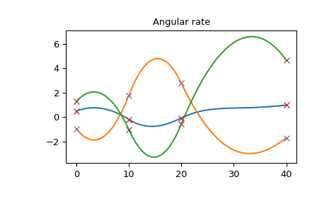
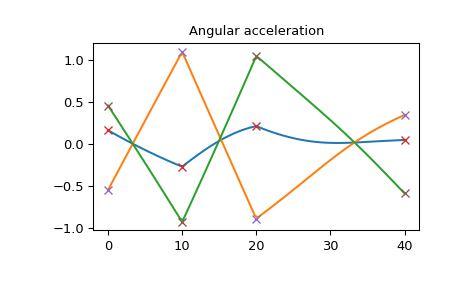

scipy.spatial.transform.RotationSpline¶
-
class
scipy.spatial.transform.RotationSpline(times, rotations)[source]¶ Interpolate rotations with continuous angular rate and acceleration.
The rotation vectors between each consecutive orientation are cubic functions of time and it is guaranteed that angular rate and acceleration are continuous. Such interpolation are analogous to cubic spline interpolation.
Refer to [R080eb009e163-1] for math and implementation details.
- Parameters
- timesarray_like, shape (N,)
Times of the known rotations. At least 2 times must be specified.
- rotations
Rotationinstance Rotations to perform the interpolation between. Must contain N rotations.
References
Examples
>>> from scipy.spatial.transform import Rotation, RotationSpline
Define the sequence of times and rotations from the Euler angles:
>>> times = [0, 10, 20, 40] >>> angles = [[-10, 20, 30], [0, 15, 40], [-30, 45, 30], [20, 45, 90]] >>> rotations = Rotation.from_euler('XYZ', angles, degrees=True)
Create the interpolator object:
>>> spline = RotationSpline(times, rotations)
Interpolate the Euler angles, angular rate and acceleration:
>>> angular_rate = np.rad2deg(spline(times, 1)) >>> angular_acceleration = np.rad2deg(spline(times, 2)) >>> times_plot = np.linspace(times[0], times[-1], 100) >>> angles_plot = spline(times_plot).as_euler('XYZ', degrees=True) >>> angular_rate_plot = np.rad2deg(spline(times_plot, 1)) >>> angular_acceleration_plot = np.rad2deg(spline(times_plot, 2))
On this plot you see that Euler angles are continuous and smooth:
>>> import matplotlib.pyplot as plt >>> plt.plot(times_plot, angles_plot) >>> plt.plot(times, angles, 'x') >>> plt.title("Euler angles") >>> plt.show()
The angular rate is also smooth:
>>> plt.plot(times_plot, angular_rate_plot) >>> plt.plot(times, angular_rate, 'x') >>> plt.title("Angular rate") >>> plt.show()
The angular acceleration is continuous, but not smooth. Also note that the angular acceleration is not a piecewise-linear function, because it is different from the second derivative of the rotation vector (which is a piecewise-linear function as in the cubic spline).
>>> plt.plot(times_plot, angular_acceleration_plot) >>> plt.plot(times, angular_acceleration, 'x') >>> plt.title("Angular acceleration") >>> plt.show()
Methods
__call__(times[, order])Compute interpolated values.